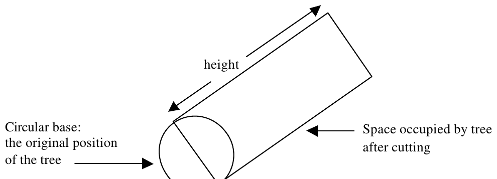

25th Annual ACM ICPC World Finals · Problem D
Once upon a time, in a country far away, there was a king who owned a forest of valuable trees. One day, to deal with a cash flow problem, the king decided to cut down and sell some of his trees. He asked his wizard to find the largest number of trees that could be safely cut down.
All the king’s trees stood within a rectangular fence, to protect them from thieves and vandals. Cutting down the trees was difficult, since each tree needed room to fall without hitting and damaging other trees or the fence. Each tree could be trimmed of branches before it was cut. For simplicity, the wizard assumed that when each tree was cut down, it would occupy a rectangular space on the ground, as shown below. One of the sides of the rectangle is a diameter of the original base of the tree. The other dimension of the rectangle is equal to the height of the tree.

Many of the king’s trees were located near other trees (that being one of the tell-tale signs of a forest.) The wizard needed to find the maximum number of trees that could be cut down, one after another, in such a way that no fallen tree would touch any other tree or the fence. As soon as each tree falls, it is cut into pieces and carried away so it does not interfere with the next tree to be cut.
The input consists of several test cases each describing a forest. The first line of each description contains five integers, xmin, ymin, xmax, ymax, and n. The first four numbers represent the minimal and maximal coordinates of the fence in the x- and y-directions (xmin < xmax, ymin < ymax). The fence is rectangular and its sides are parallel to the coordinate axes. The fifth number n represents the number of trees in the forest (1 ≤ n ≤ 100).
The next n lines describe the positions and dimensions of the n trees. Each line contains four integers, xi, yi, di, and hi, representing the position of the tree’s center (xi, yi), its base diameter di, and its height hi. No tree bases touch each other, and all the trees are entirely inside the fence, not touching the fence at all.
The input is terminated by a test case with xmin = ymin = xmax = ymax = n = 0. This test case should not be processed.
For each test case, first print its number. Then print the maximum number of trees that can be cut down, one after another, such that no fallen tree touches any other tree or the fence. Follow the format in the sample output given below. Print a blank line after each test case.
0 0 10 10 3 3 3 2 10 5 5 3 1 2 8 3 9 0 0 0 0 0
Forest 1 2 tree(s) can be cut